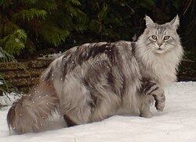

El Gato Main Coon es una raza grande y robusta, originaria de Estados Unidos. Destaca por su pelaje largo y sedoso, orejas con mechones y carácter muy amigable. Son gatos inteligentes, sociables y excelentes para familias, además de ser muy adaptables a distintos entornos.